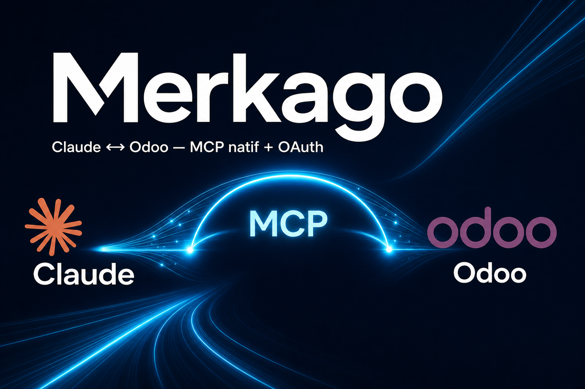
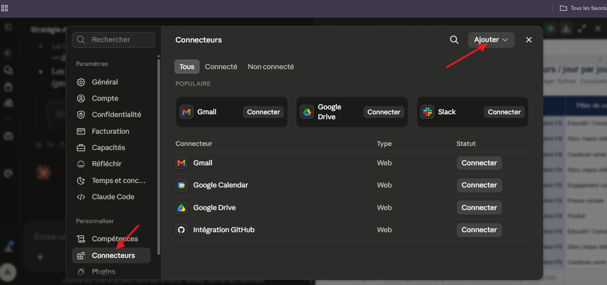
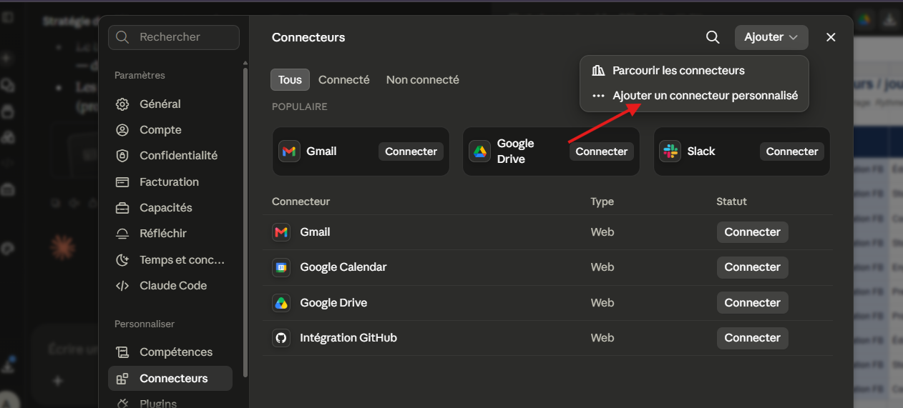
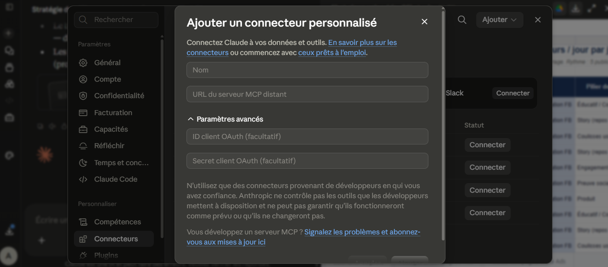
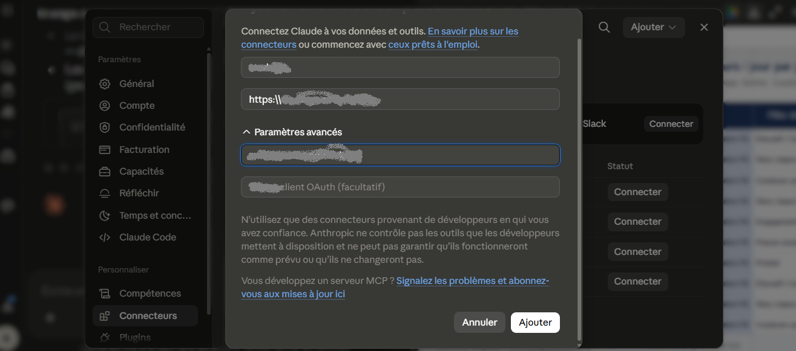
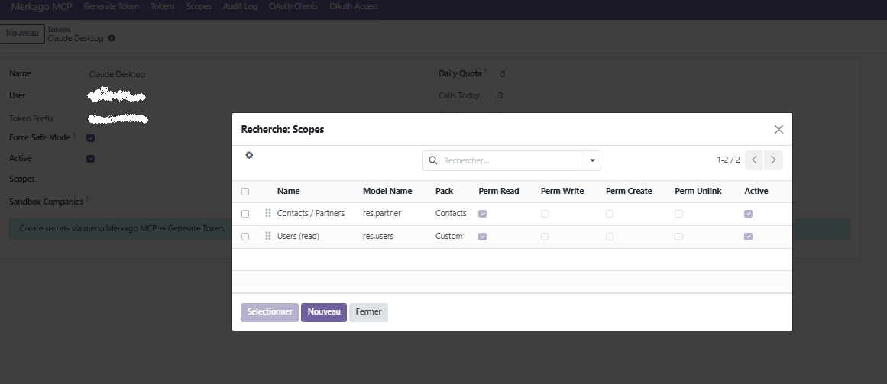
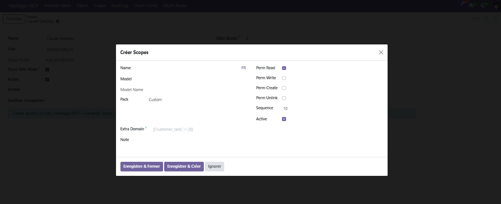

Claude Connector Odoo is a production-ready MCP (Model Context Protocol) server embedded inside Odoo Community. It lets Claude Desktop and Claude.ai talk directly to your ERP: list models, search records, read data, and (when you allow it) create or update business documents — all through natural language.
Unlike fragile scripts or external middlewares, the connector runs natively in Odoo. Authentication uses modern OAuth 2.1 + PKCE (Sign in with Odoo). Access is controlled by a model whitelist (scopes), Safe Mode, daily quotas and a full audit log. You decide exactly what Claude can see and do.
Ideal for consultants, SMEs and technical teams who want Claude as a secure assistant on top of Contacts, Products, Sales, Accounting and more — without exposing the whole database.
MCP endpoints live inside Odoo (/mcp/sse). No fragile bridge server to maintain.
OAuth 2.1 / PKCE, per-model scopes, Safe Mode (blocks writes), quotas and audit trail.
Works with Claude Connectors (custom remote MCP). Streamable HTTP + classic SSE supported.
/mcp/health, /mcp/sse, /mcp/messagesodoo_list_models, odoo_describe_model, odoo_search_read,
odoo_read, odoo_create, odoo_write, odoo_company_contexthttps://your-domain.com)dbfilter if you host multiple databasesFollow these steps after installing Claude Connector Odoo and setting your Public Base URL in Odoo (Merkago MCP settings).
In Claude go to Settings → Customize → Connectors. Click the Add button at the top right.

From the Add menu, choose Add custom connector (do not use “Browse connectors”).

Fill the form as follows:
Merkago (or any label you prefer)https://YOUR-DOMAIN/mcp/sse
Important: use a single https:// and forward slashes
/ only. Example: https://merkago.net/mcp/sse

merkago-claude-desktop
— or leave empty to use Dynamic Client Registration
When connected, Claude tools from this module appear under the connector permissions.
In Odoo open Merkago MCP → Tokens / Scopes. Attach only the models Claude is allowed to use (Contacts, Products, Users…). What is not in the whitelist is invisible to Claude.

product.template[('customer_rank','>',0)] is for contacts only)
In a new Claude chat, ask:
“Use the Merkago tool odoo_list_models now (not your memory), then count product.template with odoo_search_read.”
Keep Safe Mode enabled in production until you explicitly want Claude to create/write records.
Email:
akremkhelifi07@gmail.com
WhatsApp:
+216 54 444 373
Website:
https://merkago.net
Need a custom rule (hide cost only on website, stock valuation, PDF reports)? Contact us for a tailored extension.
License: OPL-1 · Price: 90.00 USD